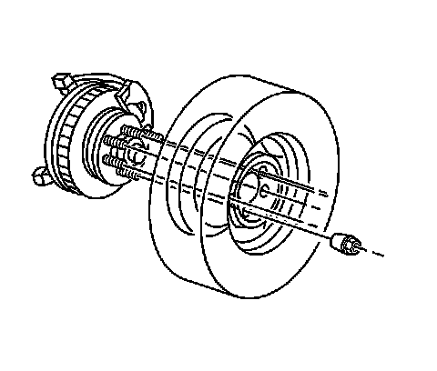
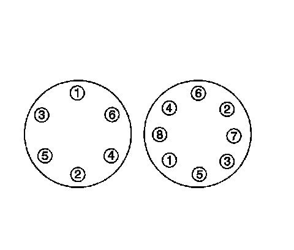

Wheels and Tires: Service and Repair
Tire and Wheel Removal and Installation
Tools Required
J 39544-KIT Complete Torque Socket Set
Caution: If penetrating oil gets on the vertical surfaces between the wheel and the rotor or drum it could cause the wheel to work loose as the vehicle is driven, resulting in loss of control and an injury accident.
Notice: Never use heat to loosen a tight wheel. It can shorten the life of the wheel, studs, or hub and bearing assemblies. Wheel nuts must be tightened in sequence and to the specified torque to avoid bending the wheel or rotor.
Notice: Improperly tightened wheel nuts can lead to brake pulsation and rotor damage. In order to avoid expensive brake repairs, evenly tighten the wheel nuts to the proper torque specification.
Important: Removing wheels can be difficult because of foreign material or a tight fit between the wheel center hole and the hub or rotor. Excessive force, such as hammering on the wheel or tire, can cause damage. Slightly tapping the tire side wall with a rubber mallet is acceptable.
1. Tighten all wheel nuts on the affected wheel.
2. Loosen each wheel nut two turns.
3. Rock the vehicle from side to side in order to loosen the wheel. If this does not loosen the wheel, rock the vehicle front to back applying quick hard jabs to the brake pedal to loosen the wheel.
4. Repeat this procedure if the wheel does not break free.
Removal Procedure
1. Raise the vehicle. Support the vehicle with suitable safety stands. Refer to Lifting and Jacking the Vehicle.
2. Remove the wheel center cap.

3. Remove the wheel nuts from the tire and wheel.
4. Mark the location of the tire and wheel to the hub assembly.
5. Remove the tire and wheel from the vehicle.
6. Clean the wheel nuts, studs and the wheel and rotor mounting surfaces.
Installation Procedure
Caution: Before installing the wheels, remove any buildup of corrosion on the wheel mounting surface and brake drum or disc mounting surface by scraping and wire brushing. Installing wheels with poor metal-to-metal contact at the mounting surfaces can cause wheel nuts to loosen. This can cause a wheel to come off when the vehicle is moving, causing loss of control and possibly personal injury.
Notice: A torque wrench or J 39544 must be used to ensure that wheel nuts are tightened to specification. Never use lubricants or penetrating fluids on wheel stud, nuts, or mounting surfaces, as this can raise the actual torque on the nut without a corresponding torque reading on the torque wrench. Wheel nuts, studs, and mounting surfaces must be clean and dry. Failure to follow these instructions could result in wheel, nut, and/or stud damage.
1. Install the tire and wheel. Align the locating mark of the tire and wheel to the hub.

Notice: Refer to Fastener Notice.
Important: Tighten the nuts evenly and alternately in order to avoid excessive runout.
2. Install the wheel nuts.
Tighten the wheel nuts as shown to 190 N.m (140 lb ft).
3. Install the wheel center cap.
4. Remove the safety stands.
5. Lower the vehicle.